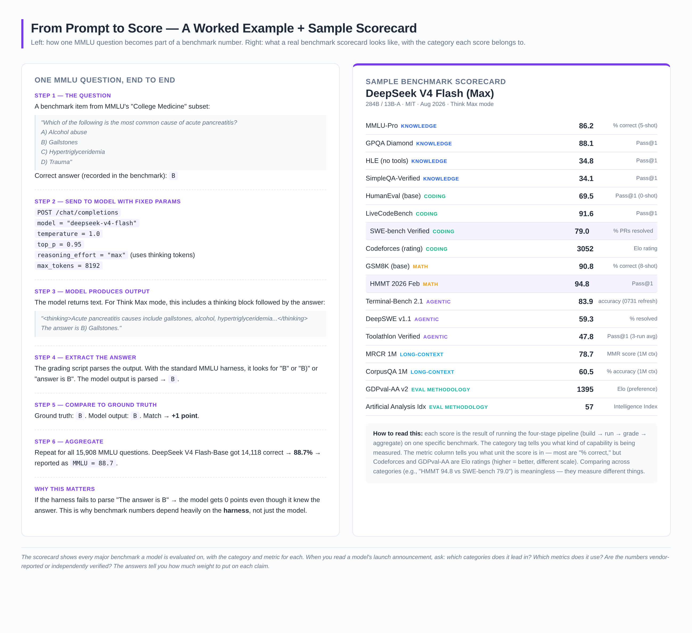
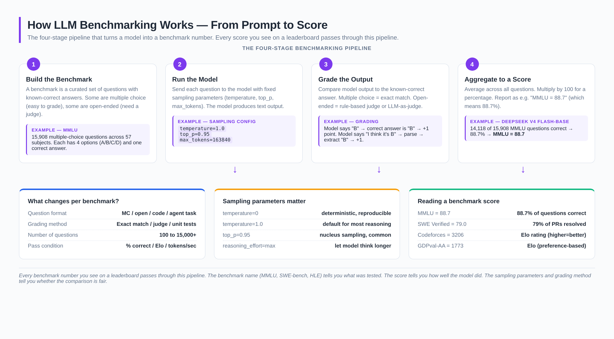

Introduction: Why Quantization Format Choice Matters
If you run large language models locally, you have to choose a quantization format. The format you pick determines how much VRAM you need, how fast inference runs, and how much quality you lose. In 2026, four formats dominate the local-AI ecosystem: GGUF, EXL2, AWQ, and GPTQ. Each has a different philosophy, a different toolchain, and a different sweet spot.
This guide walks through every format, explains the underlying math at a high level, shows you the exact trade-offs, and recommends a default format for each use case. By the end you'll know which format to download, which tool to run, and which file size to expect.
🚀 Key Takeaway
Use GGUF for llama.cpp / Ollama / LM Studio workflows (CPU + GPU, broadest hardware support). Use EXL2 for ExLlamaV2 on NVIDIA GPUs (best speed-quality balance at 4-6 bpw). Use AWQ for low-VRAM NVIDIA GPUs (best quality-per-bit at 4-bit). Use GPTQ for legacy compatibility only — it's been superseded by AWQ and EXL2.
1. GGUF — The Universal Format
GGUF (GPT-Generated Unified Format) is the format created by Georgi Gerganov for llama.cpp and is now the de-facto standard for local LLM inference. It runs on virtually any hardware: NVIDIA, AMD, Apple Silicon, Intel CPUs, and even Raspberry Pi. A single GGUF file contains the model weights, tokenizer, metadata, and any quantization parameters — no external config needed.
Quantization schemes
GGUF supports many quantization types, named by their effective bits-per-weight (bpw):
- Q2_K, Q3_K_S, Q3_K_M, Q3_K_L — 2-3 bit, aggressive compression for very large models on small hardware
- Q4_0, Q4_1, Q4_K_S, Q4_K_M — 4-bit, the sweet spot for most users. Q4_K_M is the default recommendation
- Q5_0, Q5_1, Q5_K_S, Q5_K_M — 5-bit, near-lossless for most models
- Q6_K — 6-bit, essentially identical to Q8 with smaller files
- Q8_0 — 8-bit, near-BF16 quality with ~50% size reduction
- F16, F32 — full precision, reference only
Strengths
- Universal hardware support — runs on literally any modern device with a CPU or GPU
- Mature ecosystem — Ollama, LM Studio, KoboldCpp, text-generation-webui, llama.cpp itself
- Per-layer mixed precision — K-quants can use higher precision for sensitive layers
- Excellent CPU performance — the only format that runs efficiently on pure CPU setups
- Apple Silicon MLX support — GGUF can be converted to MLX for native Apple Silicon inference
Weaknesses
- Not the fastest on high-end NVIDIA GPUs — EXL2 and AWQ pull ahead on RTX 4090/5090
- Larger file sizes at equivalent quality — GGUF Q4_K_M is typically 10-15% larger than EXL2 4.0 bpw
2. EXL2 — ExLlamaV2's Native Format
EXL2 is the format designed for ExLlamaV2, a high-performance inference engine for NVIDIA GPUs. It uses a flexible bits-per-weight target (e.g., 4.25 bpw, 5.5 bpw) rather than fixed quantization levels, which lets it pack weights more efficiently than formats that round to 4-bit or 8-bit boundaries.
How EXL2 differs
EXL2 uses the same underlying quantization math as GPTQ (calibration-based) but stores the result in a more efficient binary format. The key innovation: you can quantize to any target bpw (3.5, 4.0, 4.25, 5.0, 6.0, 8.0) and the tool picks the optimal bit allocation per layer to hit your target size.
- 4.0 bpw — equivalent to GPTQ 4-bit, smaller files than GGUF Q4_K_M
- 4.25-5.0 bpw — sweet spot for most use cases, near-lossless quality
- 6.0-8.0 bpw — for users who want maximum quality with some compression
Strengths
- Best speed-quality balance on NVIDIA — ExLlamaV2 is the fastest inference engine for consumer NVIDIA GPUs
- Flexible bpw targets — get exactly the file size you want
- Smaller files than GGUF at equivalent quality — typically 10-15% smaller
- Excellent VRAM efficiency — better than GPTQ at low bit counts
Weaknesses
- NVIDIA only — no AMD, no Apple Silicon, no CPU
- Requires calibration data — quantizing a new model needs a calibration dataset
- Smaller community — fewer pre-quantized models on Hugging Face compared to GGUF
3. AWQ — Activation-aware Weight Quantization
AWQ is a 4-bit quantization method from MIT that protects the most important weights based on the activation patterns observed during a small calibration run. The key insight: not all weights are equally important, and you can identify the "salient" weights by watching which channels have the largest activations during inference.
How AWQ works
AWQ doesn't quantize every weight to 4 bits. Instead, it:
- Runs a small calibration dataset through the model to record per-channel activation magnitudes
- Identifies the top ~1% of "salient" weight channels
- Keeps those channels at higher precision (effectively 8-bit) and quantizes the rest to 4-bit
- Applies a learned scaling factor per channel to minimize quantization error
The result: a model that, at 4-bit, has quality close to 6-bit GPTQ but with the file size of 4-bit. On benchmarks AWQ often matches GGUF Q5_K_M at Q4 file sizes.


Strengths
- Best quality at 4-bit — meaningfully better than GPTQ 4-bit, often comparable to 5-6 bit
- Fast inference — supported by vLLM, TGI, AutoAWQ, and TensorRT-LLM
- Low VRAM — 4-bit AWQ fits larger models on smaller GPUs than FP16
Weaknesses
- NVIDIA only — uses INT4 GEMM kernels, not portable to AMD/Apple
- 4-bit only — no flexible bpw like EXL2
- Calibration required — quantizing new models needs care to pick the right calibration set
4. GPTQ — The Legacy Format
GPTQ (GPT Quantization) is the original post-training quantization method for LLMs, published in 2022. It uses second-order information (Hessian) to minimize the error introduced by quantizing each weight in sequence. It was the dominant format from 2023-2024 and is still widely available on Hugging Face, but has been largely superseded by AWQ and EXL2.
How GPTQ works
GPTQ processes the weight matrix column by column. For each weight, it computes the quantization error and uses the Hessian matrix to compensate for that error in the remaining unquantized columns. The result is a globally optimized 4-bit (or 8-bit) quantization that's much better than naive per-weight rounding.
Strengths
- Wide hardware support — runs on NVIDIA, AMD (via ROCm), and some Apple Silicon setups
- Many pre-quantized models — vast Hugging Face ecosystem
- Mature toolchain — well-documented quantization scripts
Weaknesses
- Worse than AWQ at 4-bit — AWQ's activation-aware approach yields better quality at the same bit count
- Slower than EXL2 — ExLlamaV2 is faster than most GPTQ runtimes
- Group size trade-offs — smaller group sizes are better quality but larger files
5. Format Comparison Matrix
| Feature | GGUF | EXL2 | AWQ | GPTQ |
|---|---|---|---|---|
| Hardware | Any (CPU/GPU) | NVIDIA only | NVIDIA only | NVIDIA, some AMD |
| Bit widths | 2-8 bit (K-quants) | Any (1-8 bpw) | 4-bit only | 4-bit, 8-bit |
| File size at Q4 | ~4.5 GB/8B model | ~4.0 GB/8B model | ~4.0 GB/8B model | ~4.0 GB/8B model |
| Quality at Q4 | Very good (Q4_K_M) | Excellent (4.25 bpw) | Best (4-bit) | Good |
| Inference speed (NVIDIA) | Good | Excellent | Very good | Good |
| CPU inference | Best | Not supported | Not supported | Limited |
| Apple Silicon | Yes (MLX conversion) | No | No | Limited |
| Calibration required | No | Yes | Yes | Yes |
| Best tool | llama.cpp / Ollama | ExLlamaV2 | AutoAWQ | GPTQ-for-LLaMA |
6. Choosing the Right Format
For NVIDIA GPU users (RTX 3060+)
- Want best quality at 4-bit? Use AWQ
- Want best speed-quality balance? Use EXL2 at 4.25-5.0 bpw
- Want max compatibility? Use GGUF Q4_K_M
For AMD GPU users
- Best option: GGUF (ROCm support in llama.cpp is mature)
- Limited: GPTQ with ROCm-compatible kernels
For Apple Silicon users
- Best option: GGUF converted to MLX, or run GGUF directly via llama.cpp
- Alternative: Native MLX format (separate ecosystem)
For CPU-only users
- Only option that works well: GGUF (Q4_K_M or Q5_K_M)
7. Quality at Different Bit Counts
The general rule for 2026 (Llama-3-class 8B-70B models):
- 2-3 bit (Q2_K, Q3_K): Noticeable quality loss, only for very large models where you need to fit them in limited VRAM
- 4 bit (Q4_K_M, EXL2 4.0, AWQ): Sweet spot for most users. ~99% of BF16 quality on most benchmarks
- 5 bit (Q5_K_M, EXL2 5.0): Near-lossless for most tasks. Recommended for coding/reasoning where quality matters
- 6 bit (Q6_K, EXL2 6.0): Essentially indistinguishable from BF16 in practice
- 8 bit (Q8_0): Reference quality with ~50% size reduction
8. Practical Recommendations
💎 Default Recommendations
For a 24GB NVIDIA GPU (RTX 3090/4090): EXL2 5.0 bpw for 70B models, EXL2 6.0 bpw for 13B models
For a 12GB NVIDIA GPU (RTX 3060/4070): AWQ 4-bit for 13B, EXL2 4.0 bpw for 7B
For a 8GB GPU (RTX 3060 Ti / 4060 Ti): AWQ 4-bit for 7B, GGUF Q4_K_M for 3-4B
For Apple Silicon (M2/M3/M4): GGUF Q4_K_M via llama.cpp, or MLX format directly
For CPU-only: GGUF Q4_K_M is the only practical option
9. Converting Between Formats
All formats can be converted from each other with the right tools:
- HF → GGUF:
llama.cpp/convert_hf_to_gguf.py - GGUF → MLX:
mlx_lm.convert - HF → EXL2:
exllamav2/conversion(requires calibration data) - HF → AWQ:
AutoAWQ(requires calibration data) - HF → GPTQ:
GPTQ-for-LLaMAorauto-gptq
10. The Future of Quantization
Three trends to watch in 2026-2027:
- Sub-4-bit (FP4, NVFP4): NVIDIA's Blackwell GPUs and DeepSeek V4 ship native FP4 weights. Expect FP4 to become the default for new models by end of 2026
- Quantization-Aware Training (QAT): Models trained with quantization baked in (rather than post-training quantized) preserve quality better. This is becoming the norm for new releases
- Unified formats: The industry is moving toward formats that work across all backends. GGUF's universal approach is winning this race, with vLLM and others adding GGUF support
Conclusion
The quantization format you choose is a trade-off between hardware support, file size, inference speed, and quality. For most users in 2026, GGUF Q4_K_M is the safe default — it runs everywhere and the quality is excellent. If you're on a high-end NVIDIA GPU and want the absolute best speed-quality balance, EXL2 at 4.25-5.0 bpw is the choice. If you need 4-bit quality and have a smaller NVIDIA GPU, AWQ is unmatched. GPTQ remains useful for legacy compatibility but is no longer the best option for new deployments.
The best part: you can download all four formats and benchmark them on your specific hardware with your specific prompts. Every format is one Hugging Face search away.
Related Posts
GPU & CPU Inference Troubleshooting
Complete troubleshooting guide for inference issues — OOM, slow tok/s, KV cache pressure.
Read more →AI Inference Hardware 2026
Complete 2026 catalog of AI inference hardware across NVIDIA, AMD, Apple Silicon.
Read more →Maximum Capability from Minimum Silicon
A research paper on maximizing 8 GB GPU + 32 GB RAM workstations for AI agent workloads.
Read more →About the Author
Hussain Nazary is a software developer specializing in local AI deployment and the creator of GGUF Loader, an open-source tool for running GGUF models locally. This analysis is part of Local AI Zone's ongoing coverage of open-weight language models and practical deployment strategies.
Contact: GitHub | Consulting Services
Last Updated: August 15, 2026 | Version 1.0